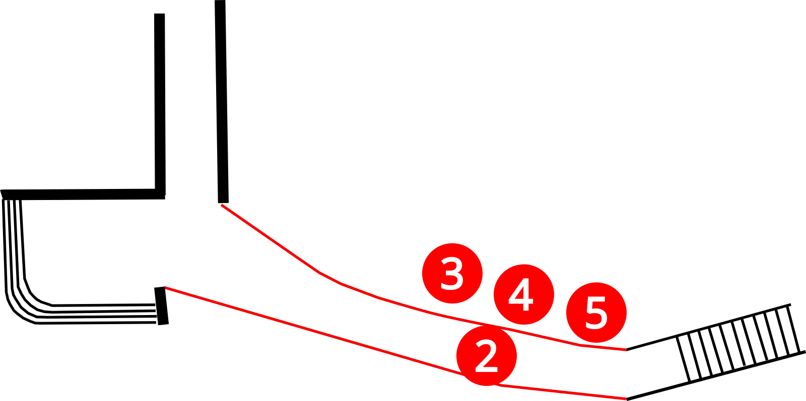

1. Welkom

Plattegrond Twente aan zee
Welkom bij de audiotour "Twente aan Zee: een verhaal door fossielen" van de Museumfabriek.
In deze tour ontdek je aan de hand van fossielen hoe de aarde – en vooral deze regio – zich in miljoenen jaren heeft ontwikkeld.
Want de aarde zag er niet altijd hetzelfde uit! Wist je dat hier vroeger woestijn was, en ook een tropische zee? En dat er in Twente en de Achterhoek sporen van sauriërs zijn gevonden, of resten van walvissen en een reuzehaai?
Hoe werkt de tour?
Met het pijltje rechtsboven ga je naar het volgende luisterpunt. Op de plattegrond kun je een luisterpunt kiezen door op een rode stip te klikken. De tour duurt 15-20 minuten.
Bij "meer info" knop vind je extra informatie of video's. Je kunt ook een eigen volgorde kiezen via de plattegrond.
Klik op de help (?) knop voor een beschrijving van de werking van de knoppen.
Luister met oortjes of lees mee op je scherm. Veel plezier!